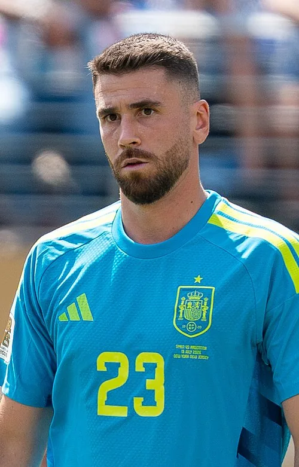

Photo source ↗Bryan Berlin · CC BY-SA 4.0
The profile
Unai Simón
Unai Simón is a Spanish goalkeeper who developed at Athletic Club. His command of the penalty area and ability with the ball suited Spain’s approach.
Simón came through Athletic Club’s development system and became its first-choice goalkeeper. He built a reputation for reliable shot-stopping and for helping his team play out from the back.
Simón won the Golden Glove at the 2026 World Cup as Spain claimed the title. He kept seven clean sheets in eight matches, including the 1–0 final win over Argentina.
2022Qatar Round of 16
Group E Spain7 : 0Costa Rica
- Dani OLMO11′
- Marco ASENSIO21′
- Ferran TORRES31′ · pen.
- Ferran TORRES54′
- GAVI74′
- Carlos SOLER90′
- Alvaro MORATA90+2′
Spainhome
Starting lineup
- Unai SIMON
- Cesar AZPILICUETA
- RODRI
- Jordi ALBA
- Aymeric LAPORTE
- Sergio BUSQUETS
- GAVI
- Pedri GONZALEZ
- Marco ASENSIO
- Ferran TORRES
- Dani OLMO
Substitutions
- 57′Carlos SOLER on · Pedri GONZALEZ off
- 57′Alvaro MORATA on · Ferran TORRES off
- 64′KOKE on · Sergio BUSQUETS off
- 64′Alejandro BALDE on · Jordi ALBA off
- 69′Nico WILLIAMS on · Marco ASENSIO off
Costa Ricaaway
Starting lineup
- Keylor NAVAS
- Oscar DUARTE
- Bryan OVIEDO
- Francisco CALVO
- Carlos MARTINEZ
- Keysher FULLER
- Celso BORGES
- Jewison BENNETTE
- Yeltsin TEJEDA
- Anthony CONTRERAS
- Joel CAMPBELL
Substitutions
- 46′Kendall WASTON on · Carlos MARTINEZ off
- 61′Bryan RUIZ on · Jewison BENNETTE off
- 61′Alvaro ZAMORA on · Anthony CONTRERAS off
- 72′Brandon AGUILERA on · Celso BORGES off
- 82′Ronald MATARRITA on · Bryan OVIEDO off
Group E Spain1 : 1Germany
- Alvaro MORATA62′
- Niclas FUELLKRUG83′
Spainhome
Starting lineup
- Unai SIMON
- RODRI
- Jordi ALBA
- Dani CARVAJAL
- Aymeric LAPORTE
- Sergio BUSQUETS
- GAVI
- Pedri GONZALEZ
- Marco ASENSIO
- Ferran TORRES
- Dani OLMO
Substitutions
- 54′Alvaro MORATA on · Ferran TORRES off
- 66′KOKE on · Marco ASENSIO off
- 66′Nico WILLIAMS on · GAVI off
- 82′Alejandro BALDE on · Jordi ALBA off
Germanyaway
Starting lineup
- Manuel NEUER
- Antonio RUEDIGER
- David RAUM
- Thilo KEHRER
- Niklas SUELE
- Joshua KIMMICH
- Leon GORETZKA
- Serge GNABRY
- Jamal MUSIALA
- Ilkay GUENDOGAN
- Thomas MUELLER
Substitutions
- 70′Lukas KLOSTERMANN on · Thilo KEHRER off
- 70′Leroy SANE on · Ilkay GUENDOGAN off
- 70′Niclas FUELLKRUG on · Thomas MUELLER off
- 85′Jonas HOFMANN on · Serge GNABRY off
- 87′Nico SCHLOTTERBECK on · David RAUM off
Group E Japan2 : 1Spain
- Ritsu DOAN48′
- Ao TANAKA51′
- Alvaro MORATA11′
Japanhome
Starting lineup
- Shuichi GONDA
- Shogo TANIGUCHI
- Kou ITAKURA
- Maya YOSHIDA
- Yuto NAGATOMO
- Hidemasa MORITA
- Junya ITO
- Ao TANAKA
- Takefusa KUBO
- Daichi KAMADA
- Daizen MAEDA
Substitutions
- 46′Ritsu DOAN on · Takefusa KUBO off
- 46′Kaoru MITOMA on · Yuto NAGATOMO off
- 62′Takuma ASANO on · Daizen MAEDA off
- 68′Takehiro TOMIYASU on · Daichi KAMADA off
- 87′Wataru ENDO on · Ao TANAKA off
Spainaway
Starting lineup
- Unai SIMON
- Cesar AZPILICUETA
- Pau TORRES
- Alejandro BALDE
- RODRI
- Sergio BUSQUETS
- GAVI
- Pedri GONZALEZ
- Alvaro MORATA
- Nico WILLIAMS
- Dani OLMO
Substitutions
- 46′Dani CARVAJAL on · Cesar AZPILICUETA off
- 57′Marco ASENSIO on · Alvaro MORATA off
- 57′Ferran TORRES on · Nico WILLIAMS off
- 68′Ansu FATI on · GAVI off
- 68′Jordi ALBA on · Alejandro BALDE off
Round of 16 Morocco0 : 0Spain
Moroccohome
Starting lineup
- Yassine BOUNOU
- Achraf HAKIMI
- Noussair MAZRAOUI
- Nayef AGUERD
- Romain SAISS
- Sofyan AMRABAT
- Azzedine OUNAHI
- Selim AMALLAH
- Hakim ZIYECH
- Sofiane BOUFAL
- Youssef EN NESYRI
Substitutions
- 66′Abde EZZALZOULI on · Sofiane BOUFAL off
- 82′Abdelhamid SABIRI on · Youssef EN NESYRI off
- 82′Walid CHEDDIRA on · Selim AMALLAH off
- 82′Yahya ATTIAT-ALLAH on · Noussair MAZRAOUI off
- 84′Jawad EL YAMIQ on · Nayef AGUERD off
- 120′Badr BENOUN on · Azzedine OUNAHI off
Spainaway
Starting lineup
- Unai SIMON
- Marcos LLORENTE
- RODRI
- Jordi ALBA
- Aymeric LAPORTE
- Sergio BUSQUETS
- GAVI
- Pedri GONZALEZ
- Marco ASENSIO
- Ferran TORRES
- Dani OLMO
Substitutions
- 63′Carlos SOLER on · GAVI off
- 63′Alvaro MORATA on · Marco ASENSIO off
- 75′Nico WILLIAMS on · Ferran TORRES off
- 98′Ansu FATI on · Dani OLMO off
- 98′Alejandro BALDE on · Jordi ALBA off
- 118′Pablo SARABIA on · Nico WILLIAMS off
2026Canada · Mexico · USA Champion
Group H Spain0 : 0Cape Verde
Spainhome
Starting lineup
- Unai SIMON
- Marcos LLORENTE
- Aymeric LAPORTE
- Pau CUBARSI
- Marc CUCURELLA
- Fabian RUIZ
- GAVI
- RODRI
- PEDRI
- Ferran TORRES
- Mikel OYARZABAL
Substitutions
- 71′Lamine YAMAL on · GAVI off
- 71′Mikel MERINO on · Fabian RUIZ off
- 81′Dani OLMO on · Ferran TORRES off
- 87′Nico WILLIAMS on · RODRI off
Cape Verdeaway
Starting lineup
- VOZINHA
- DINEY BORGES
- PICO LOPES
- SIDNY LOPES CABRAL
- STEVEN MOREIRA
- KEVIN PINA
- JOVANE CABRAL
- JAMIRO MONTEIRO
- LAROS DUARTE
- DAILON LIVRAMENTO
- RYAN MENDES
Substitutions
- 61′WILLY SEMEDO on · JOVANE CABRAL off
- 61′NUNO DA COSTA on · DAILON LIVRAMENTO off
- 61′DEROY DUARTE on · LAROS DUARTE off
- 76′JOAO PAULO on · SIDNY LOPES CABRAL off
- 79′TELMO ARCANJO on · JAMIRO MONTEIRO off
Group H Spain4 : 0Saudi Arabia
- Lamine YAMAL10′
- Mikel OYARZABAL21′
- Mikel OYARZABAL24′
- HASSAN ALTAMBAKTI49′ · own goal
Spainhome
Starting lineup
- Unai SIMON
- Pedro PORRO
- Aymeric LAPORTE
- Pau CUBARSI
- Marc CUCURELLA
- Alex BAENA
- RODRI
- PEDRI
- Dani OLMO
- Lamine YAMAL
- Mikel OYARZABAL
Substitutions
- 46′Ferran TORRES on · Mikel OYARZABAL off
- 46′Yeremy PINO on · Lamine YAMAL off
- 61′Mikel MERINO on · Dani OLMO off
- 61′Nico WILLIAMS on · Alex BAENA off
- 70′Fabian RUIZ on · PEDRI off
Saudi Arabiaaway
Starting lineup
- MOHAMMED ALOWAIS
- ALI LAJAMI
- Abdulelah ALAMRI
- HASSAN ALTAMBAKTI
- SAUD ABDULHAMID
- MOTEB ALHARBI
- NASSER ALDAWSARI
- MUSAB ALJUWAYR
- ABDULLAH ALKHAIBARI
- FERAS ALBRIKAN
- SALEM ALDAWSARI
Substitutions
- 46′ABDULLAH ALHAMDDAN on · MUSAB ALJUWAYR off
- 46′MOHAMED KANNO on · ABDULLAH ALKHAIBARI off
- 60′MOHAMMED ABU ALSHAMAT on · FERAS ALBRIKAN off
- 60′ALA ALHAJJI on · Abdulelah ALAMRI off
- 90′KHALID ALGHANNAM on · NASSER ALDAWSARI off
Group H Uruguay0 : 1Spain
- Alex BAENA42′
Uruguayhome
Starting lineup
- Fernando MUSLERA
- Sebastian CACERES
- Guillermo VARELA
- Mathias OLIVERA
- Manuel UGARTE
- Rodrigo BENTANCUR
- Federico VALVERDE
- Agustin CANOBBIO
- Maxi ARAUJO
- Juan Manuel SANABRIA
- Darwin NUNEZ
Substitutions
- 45′Nicolas DE LA CRUZ on · Manuel UGARTE off
- 46′Sergio ROCHET on · Fernando MUSLERA off
- 56′Federico VINAS on · Federico VALVERDE off
- 70′Brian RODRIGUEZ on · Juan Manuel SANABRIA off
Spainaway
Starting lineup
- Unai SIMON
- Marcos LLORENTE
- Aymeric LAPORTE
- Pau CUBARSI
- Marc CUCURELLA
- Mikel MERINO
- Alex BAENA
- RODRI
- PEDRI
- Lamine YAMAL
- Mikel OYARZABAL
Substitutions
- 60′Fabian RUIZ on · PEDRI off
- 60′Dani OLMO on · Mikel MERINO off
- 66′Yeremy PINO on · Alex BAENA off
- 76′Ferran TORRES on · Mikel OYARZABAL off
- 76′Nico WILLIAMS on · Lamine YAMAL off
Round of 32 Spain3 : 0Austria
- Mikel OYARZABAL36′
- Pedro PORRO66′
- Mikel OYARZABAL89′
Spainhome
Starting lineup
- Unai SIMON
- Pedro PORRO
- Aymeric LAPORTE
- Pau CUBARSI
- Marc CUCURELLA
- Alex BAENA
- RODRI
- PEDRI
- Dani OLMO
- Lamine YAMAL
- Mikel OYARZABAL
Substitutions
- 71′Ferran TORRES on · Alex BAENA off
- 71′Mikel MERINO on · Dani OLMO off
- 85′GAVI on · Lamine YAMAL off
- 90+3′Fabian RUIZ on · PEDRI off
- 90+3′Marc PUBILL on · Aymeric LAPORTE off
Austriaaway
Starting lineup
- Alexander SCHLAGER
- Kevin Danso
- Stefan POSCH
- David ALABA
- Xaver Schlager
- Nicolas SEIWALD
- Marcel SABITZER
- Romano SCHMID
- Konrad LAIMER
- Paul WANNER
- Michael Gregoritsch
Substitutions
- 46′Florian GRILLITSCH on · Xaver Schlager off
- 46′Carney CHUKWUEMEKA on · Nicolas SEIWALD off
- 60′Sasa KALAJDZIC on · Romano SCHMID off
- 60′Marko ARNAUTOVIC on · Michael Gregoritsch off
- 85′Alexander PRASS on · Stefan POSCH off
Round of 16 Portugal0 : 1Spain
- Mikel MERINO90+1′
Portugalhome
Starting lineup
- DIOGO COSTA
- RUBEN DIAS
- RENATO VEIGA
- JOAO CANCELO
- NUNO MENDES
- BRUNO FERNANDES
- JOAO NEVES
- VITINHA
- CRISTIANO RONALDO
- JOAO FELIX
- PEDRO NETO
Substitutions
- 56′NELSON SEMEDO on · NUNO MENDES off
- 71′RAFAEL LEAO on · JOAO FELIX off
- 71′DIOGO DALOT on · JOAO CANCELO off
- 83′FRANCISCO CONCEICAO on · PEDRO NETO off
- 83′BERNARDO SILVA on · VITINHA off
Spainaway
Starting lineup
- Unai SIMON
- Pedro PORRO
- Aymeric LAPORTE
- Pau CUBARSI
- Marc CUCURELLA
- Alex BAENA
- RODRI
- PEDRI
- Dani OLMO
- Lamine YAMAL
- Mikel OYARZABAL
Substitutions
- 75′Ferran TORRES on · Alex BAENA off
- 85′Mikel MERINO on · Dani OLMO off
- 85′Fabian RUIZ on · PEDRI off
- 90+7′Borja IGLESIAS on · Mikel OYARZABAL off
Quarterfinal Spain2 : 1Belgium
- Fabian RUIZ30′
- Mikel MERINO88′
- Charles DE KETELAERE41′
Spainhome
Starting lineup
- Unai SIMON
- Pedro PORRO
- Aymeric LAPORTE
- Pau CUBARSI
- Marc CUCURELLA
- Fabian RUIZ
- Alex BAENA
- RODRI
- Dani OLMO
- Lamine YAMAL
- Mikel OYARZABAL
Substitutions
- 55′Ferran TORRES on · Alex BAENA off
- 55′PEDRI on · Fabian RUIZ off
- 79′Nico WILLIAMS on · Mikel OYARZABAL off
- 86′Mikel MERINO on · Dani OLMO off
Belgiumaway
Starting lineup
- Thibaut COURTOIS
- Brandon MECHELE
- Maxim DE CUYPER
- Timothy CASTAGNE
- Nathan NGOY
- Kevin DE BRUYNE
- Hans VANAKEN
- Nicolas RASKIN
- Leandro TROSSARD
- Jeremy DOKU
- Charles DE KETELAERE
Substitutions
- 60′Joaquin SEYS on · Maxim DE CUYPER off
- 60′Axel WITSEL on · Leandro TROSSARD off
- 60′Romelu LUKAKU on · Hans VANAKEN off
- 71′Senne LAMMENS on · Thibaut COURTOIS off
- 86′Alexis SAELEMAEKERS on · Kevin DE BRUYNE off
Semifinal France0 : 2Spain
- Mikel OYARZABAL22′ · pen.
- Pedro PORRO58′
Francehome
Starting lineup
- Mike MAIGNAN
- Lucas Digne
- Dayot UPAMECANO
- Jules KOUNDE
- William SALIBA
- Aurelien TCHOUAMENI
- Adrien RABIOT
- Ousmane DEMBELE
- Kylian MBAPPE
- Michael OLISE
- Bradley BARCOLA
Substitutions
- 30′Maxence Lacroix on · William SALIBA off
- 46′Manu KONE on · Adrien RABIOT off
- 57′Desire DOUE on · Bradley BARCOLA off
- 72′Rayan CHERKI on · Michael OLISE off
- 72′Theo HERNANDEZ on · Lucas Digne off
Spainaway
Starting lineup
- Unai SIMON
- Pedro PORRO
- Aymeric LAPORTE
- Pau CUBARSI
- Marc CUCURELLA
- Fabian RUIZ
- Alex BAENA
- RODRI
- Dani OLMO
- Lamine YAMAL
- Mikel OYARZABAL
Substitutions
- 74′Ferran TORRES on · Mikel OYARZABAL off
- 77′Mikel MERINO on · Dani OLMO off
- 77′PEDRI on · Fabian RUIZ off
- 83′Nico WILLIAMS on · Alex BAENA off
- 83′Marcos LLORENTE on · Pedro PORRO off
Final Spain1 : 0Argentina
- Ferran TORRES106′
Spainhome
Starting lineup
- Unai SIMON
- Pedro PORRO
- Aymeric LAPORTE
- Pau CUBARSI
- Marc CUCURELLA
- Fabian RUIZ
- Alex BAENA
- RODRI
- Dani OLMO
- Lamine YAMAL
- Mikel OYARZABAL
Substitutions
- 62′PEDRI on · Fabian RUIZ off
- 62′Ferran TORRES on · Mikel OYARZABAL off
- 75′Mikel MERINO on · Dani OLMO off
- 75′Nico WILLIAMS on · Alex BAENA off
- 99′Martin ZUBIMENDI on · RODRI off
- 99′Eric GARCIA on · Aymeric LAPORTE off
Argentinaaway
Starting lineup
- Emiliano MARTINEZ
- Nicolas TAGLIAFICO
- Gonzalo MONTIEL
- Lisandro MARTINEZ
- Cristian ROMERO
- Rodrigo DE PAUL
- Nico GONZALEZ
- Alexis MAC ALLISTER
- Enzo FERNANDEZ
- Julian ALVAREZ
- Lionel MESSI
Substitutions
- 44′Nicolas OTAMENDI on · Lisandro MARTINEZ off
- 46′Leandro PAREDES on · Nico GONZALEZ off
- 58′Nahuel MOLINA on · Gonzalo MONTIEL off
- 70′Giuliano SIMEONE on · Rodrigo DE PAUL off
- 70′Facundo MEDINA on · Cristian ROMERO off
- 102′Marcos SENESI on · Julian ALVAREZ off